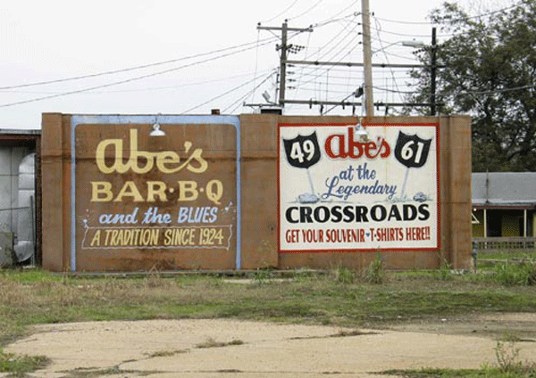

-
The Blues is Dead, Long Live the Blues: The Most Southern Weekend on Earth
by Margaret Eby July 22, 2010
Clarksdale, Mississippi isn’t much of a convention town. Tucked into the north of the Mississippi Delta, about an hour’s drive from Memphis, the town has an official population of about 20,000, but even that seems like a stretch. No stores stay open after five, and there’s not much activity downtown between Sunday night and Wednesday. It’s barely more than an oasis amidst miles of neatly groomed cotton fields, rows of stubbly plants interrupted only by gleaming metal catfish tanks and the odd piece of farm equipment. Getting there requires an active imagination and a detailed map. The surest sign that you’re approaching is when the AM radio suddenly shifts from static and Glenn Beck sermons to the sound of Hammond organs and B.B. King. Clarksdale is a blues town, one of the required stops along Highway 61 for music history buffs. It’s a town with a tourist economy based on ghosts: Ike Turner grew up there, as did Sam Cooke. Bessie Smith died in downtown Clarksdale after a car crash, and Robert Johnson supposedly sold his soul there to learn how to play guitar. The whole place is awash in tall tales, carefully preserved memorabilia, and historical markers. If you judge Southern-ness not by geography but by a penchant for anachronism, a certain over-zealousness for preserving the past, than Clarksdale is the most Southern place on earth.
Which is why The Oxford American, a Southern literary journal based in Arkansas, chose Clarksdale as the site for their weekend-long shindig, a convention/festival/editorial vacation on July 9th and 10th entitled “The Most Southern Weekend on Earth.” The hundred or so intrepid festival-goers who descended on downtown Clarksdale managed to book out all the hotels and swamp the afterhours juke joints. Most of the Southern Weekend events were staged at Ground Zero, a newer blues club with a carefully curated rundown look opened by Clarksdale native Morgan Freeman—most of the locals refer to it simply as “Morgan Freeman’s place.” Along with ZZ Top’s Billy Gibbons, Freeman has been instrumental in the marketing of Clarksdale as a Southern tourist spot—a piece of authentic blues history, still kicking, still accepting donations. Both Friday and Saturday at Ground Zero, The American booked a lineup of blues musicians and bands that grew up listening to them. The first night featured Jimbo Mathus, another native known chiefly for his big band revival outfit the Squirrel Nut Zippers. His act was a kind of bizarro musical, a washboard-strumming folk band that, dressed in what can best be termed as Appalachian chic circa 1875, told the history of Mississippi from the Civil War on up to “Wild Bill Faulkner.” The headliner of the night actually played first—Robert “Wolfman” Belfour, R.L. Burnside’s protégé, now closing in on 70. His music had a country twang, the blues washing over the crowd as they moved in to watch Belfour patiently coaxing long wails from his guitar.
Saturday’s Southern activities included a tamale tour—one of the culinary vestiges left by the wandering Hernando De Soto on his way further South—and a Q&A with music writer and Elvis buff Peter Guralnick, and Oxford American editor-in-chief Marc Smirnoff, in which Guralnick revealed tidbits about Jerry Lee Lewis, Charley Patton, and working for Rolling Stone. Later in the afternoon, Daniel Bradford, publisher of All About Beer, led a Southern beer tasting, and inspired in this reporter a renewed appreciation for Budweiser as the world’s preeminent Bohemian light lager. But the main event was back at Ground Zero, where hipster hero and blues pianist Mose Allison played a rollicking set. Allison’s keyboard stylings are one of the hidden columns of pop culture—he’s been covered by The Yardbirds and the Clash, memorialized by musicians from Frank Black to Elvis Costello to Keith Richards. In the low-lit space of Ground Zero, Allison wove deft, familiar melodies, producing more sound than seemed possible for his frail frame.
American popular music, the kind Mose has mastered, has always been equal parts sugar and grit. The blues, when it began, was many things—a lament, a series of coded complaints about racial injustice, and a way to blow off steam on a Saturday night—but it was also the music of sinners. You heard it where people came to forget, to drink, to dance and to otherwise make the Southern Baptist preachers shudder. It was dangerous and catchy, sweet and powerful. Long before Elvis’ lower half was censored, before parents bemoaned their children for listening to Kiss, before hip-hop gave us the parental advisory, the blues defined American popular music. In 2010, it no longer does—it has become, despite the efforts of its champions—a museum display. However haunting the melodies and skillful the practitioners, it is a genre that has changed hands, the rough edges have been sanded, the demons autotuned out. The blues that lives in Clarksford have been pickled, preserved in order to be trotted out on demand. Like any popular music, once the makeup of the audience shifts the songs take on a different character. You would be as likely to see Allison in Carnegie Hall as in Clarksdale. That’s the trouble with the search for authenticity, the all-consuming quest for what Greil Marcus called the old, weird America. Like anthropologists who inadvertently destroy a culture by documenting it, we change places like Clarksdale irrevocably when we identify them.
The problem with the juke joints, with the barbecue pits and abandoned warehouses and old-time motels and the whole town, in fact, is that it feels ossified for your benefit—like you’re taking a vacation in an institution. The romance of the past that draws visitors is the same thing that prevents the city from moving forward. The monuments in Clarksdale, like the ones sprinkled all over to the South, are to a different Mississippi, a dangerous, brutal place that managed to produce some of the most innovative and beautiful pop music of the 20th century. The Most Southern Weekend ever is a nod to the authenticity of the old Southern town—the real, down-home, fried-chicken-eating, cotton-pickin’ South—but that South is as much a construction as any Disney theme park. Watching the overwhelmingly white crowds dance to Mose Allison, wriggle at the juke joints, and lap up barbecue sauce, it’s hard not to think of the whole thing as a sort of spirited do-over, a way to go back and rectify the injustice of the past through sheer cultural enthusiasm. It’s a lovely illusion, a grand tall tale—one that Faulkner surely would recognize. But it’s an illusion nonetheless.